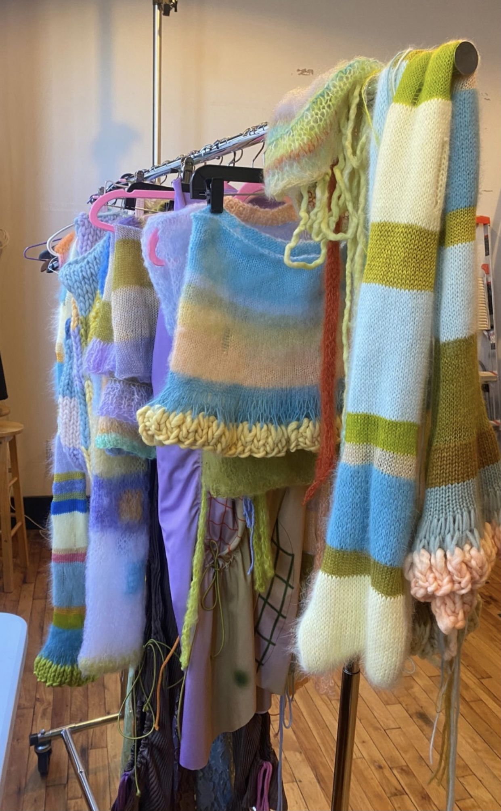
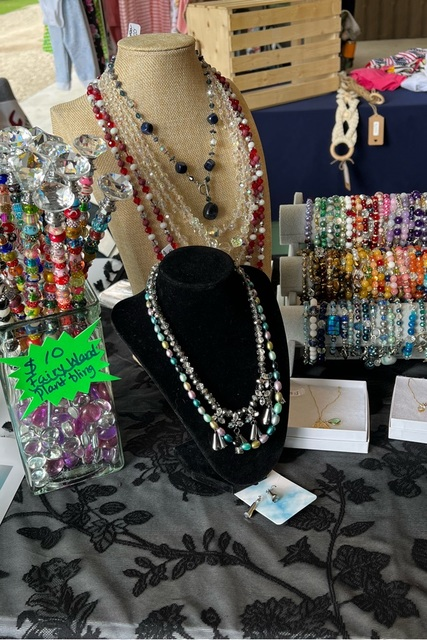
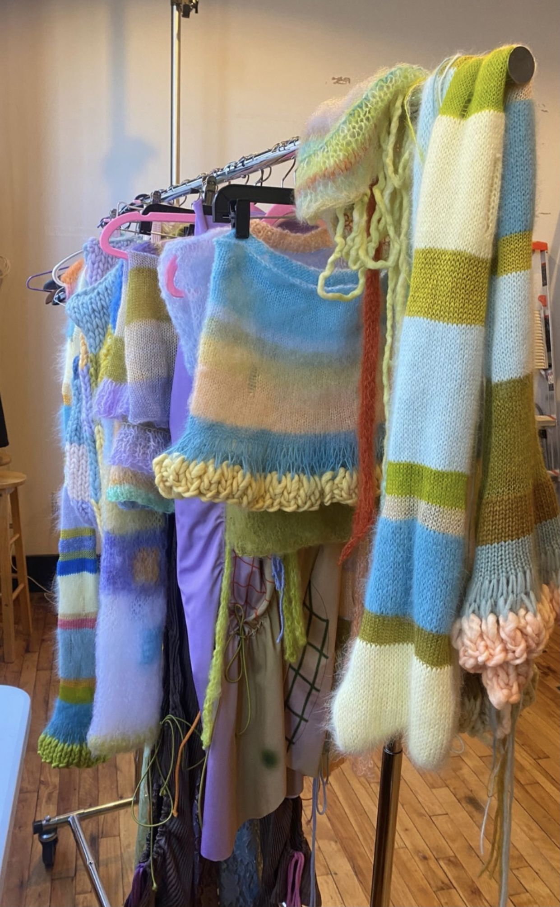
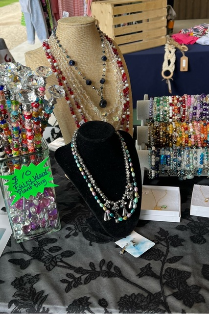

Welcome to our Market!
Munch & Makers Farmers Market is your go-to online destination for fresh local produce and handcrafted goods. We bring the best of Johannesburg right to your doorstep, come rain or shine.
Who are we?
We are a community-driven platform dedicated to supporting local crafters by providing an easy and reliable way to shop fresh goods and produce whenever the physical market is out of your reach.
Location
Proudly serving the Johannesburg area, we connect you with trusted vendors from across the city. Our delivery and pick-up options make access to fresh local goods and produce convenient.
Our Stalls
Discover a wide variety of goods, from delicious baked items and fresh produce to unique artisan crafts. Our stalls offer something for everyone to enjoy and explore.
How it works?

1. You Choose
Browse our digital stalls and pick your favourite local goods and produce. We offer a wide variety from trusted Johannesburg vendors.

2. We Deliver
We deliver your order directly to you, packaged to ensure freshness. Convenient delivery or pick-up options make getting your goods simple.

3. You Enjoy
Enjoy delicious produce and unique handcrafted goods from local makers. It's the easiest way to support your community.

 



Discover More
Customer Reviews
Amanda R.
"We just love Munch & Makers! Even my family has started saying Munch & Makers is the best!"
Angelique N.
"Keep doing what you do! The produce is so fresh and the food is delicious. I honestly cannot brag about it enough. Every product has so much flavour and quality!"
Mignon K.
"I love that I don't have to go out of my way to buy and prepare a weeks worth of local goods. Thank you for helping us with super easy and delicious products!"